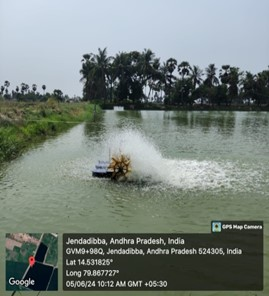
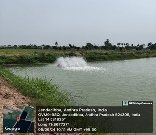

WEEKLY REPORT
WEEK- 4 (From 03-06-24 to 09-06-24)
Objective of the Activity Done: The main objective of this week is to Examine and understand the Feed management and feeding process and also the process of Aeration.
Detailed Report:
Day 1:
- Feed management:
- >A high FCR or high amount of feed required to produce unit weight gain indicates overfeeding, and consequently, a poor FCR is usually associated with poor growth rate, low weight gain, stressed shrimp, mediocre water quality and adverse pond bottom conditions. Therefore, the proper amount of feed is the most critical factor of feeding management.
Day 2:
- Water Quality Management :
- >As long as vannamei shrimp cultivation takes place, farmers must implement good water quality management and continue to observe it. This is so that if there is a change or fluctuation in water quality parameters during cultivation, it will be easier for farmers to find out.
The water used for vannamei cultivation is seawater with a salinity level above 15 ppt which must be replaced every 60 days. While the parameters used to measure water quality include pH, DO, temperature, brightness, total ammonia nitrogen, NH3, total vibrio count, alkalinity, salinity, and the type and amount of plankton.
Day 3:
- The Function of the Shrimp Pond Aerator :
- >Increasing the supply of oxygen in the water stabilizes the biological processes of shrimp. Ensuring the shrimp get an adequate supply of dissolved oxygen
Improve the quality of the water where shrimp live. Helps distribute nutrients and feed evenly into the pond.
Make it easier for pond bottom manure to be directed to the disposal center so that the pond bottom is easier to clean.

